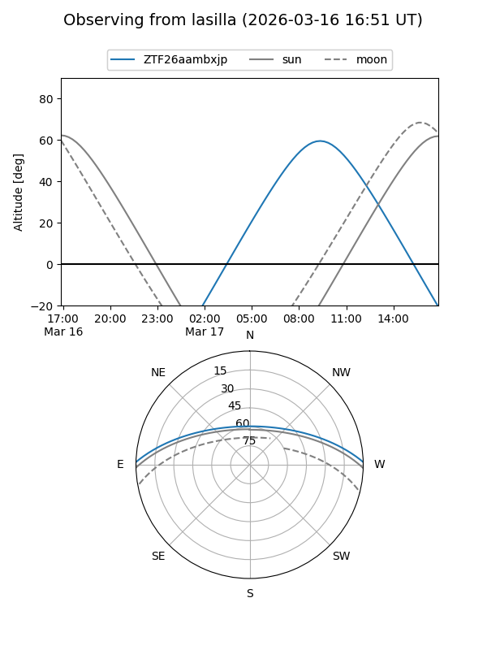
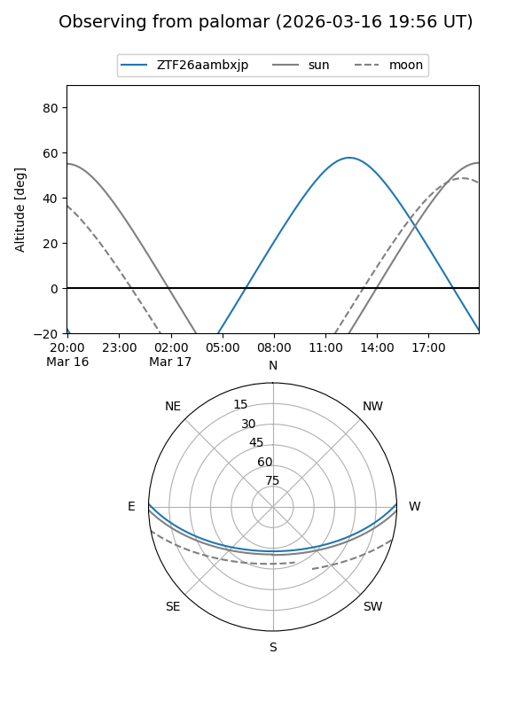

ZTF26aambxjp
Target ZTF26aambxjp at 2026-03-16 14:30
Aliases and brokers:
FINK: link
Lasair: link
ALeRCE: link
alt names
ZTF26aambxjp (ztf,fink_ztf)
Coordinates:
equatorial (ra, dec) = 243.9824,+1.25367
equatorial (HMS+DMS) = 16:15:55.78,+01:15:13.23
galactic (l, b) = (14.0198,+34.64186)
Flags:
Photometry:
last ztfg=17.74
1 ztfg detections
Lightcurve
Visibility


Additional plots